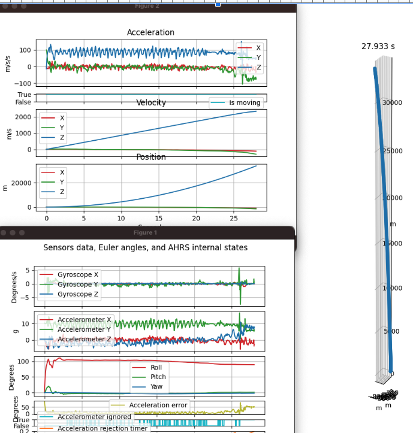
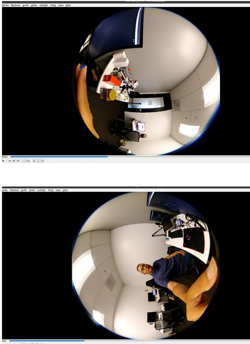

Video Metadata

CaMM Data in Videos
- Official THETA Metadata Specification
- THETA X stores IMU data in CaMM format
- Community example of extracting data
- GitHub
- Note that the example above was produced with a Z1 using a special two fisheye video format specified here
Using exiftool
exiftool -ee -V3 path/to/your/video.MP4 > path/to/results.txt
Output
Track2 Type='camm' Format='camm', Sample 1 of 3642 (16 bytes)
147e567: 00 00 02 00 00 00 00 00 00 00 00 00 00 00 00 00 [................]
SampleTime = 0
SampleDuration = 0
camm2 (SubDirectory) -->
- Tag 'camm' (16 bytes):
147e567: 00 00 02 00 00 00 00 00 00 00 00 00 00 00 00 00 [................]
+ [BinaryData directory, 16 bytes]
| AngularVelocity = 0 0 0
| - Tag 0x0004 (12 bytes, float[3]):
| 147e56b: 00 00 00 00 00 00 00 00 00 00 00 00 [............]
Track2 Type='camm' Format='camm', Sample 2 of 3642 (16 bytes)
147e577: 00 00 03 00 00 13 c7 3f c0 27 9e 40 00 28 e3 3d [.......?.'.@.(.=]
SampleTime = 0
SampleDuration = 0.005
camm3 (SubDirectory) -->
- Tag 'camm' (16 bytes):
147e577: 00 00 03 00 00 13 c7 3f c0 27 9e 40 00 28 e3 3d [.......?.'.@.(.=]
+ [BinaryData directory, 16 bytes]
| Acceleration = 1.55526733398438 4.94235229492188 0.110916137695312
| - Tag 0x0004 (12 bytes, float[3]):
| 147e57b: 00 13 c7 3f c0 27 9e 40 00 28 e3 3d [...?.'.@.(.=]
Z1 CaMM Data

community information on single-fisheye dual video recording
Z1 is capable of an unusual video format that produces 2 single fisheye videos with CaMM data. The videos need to be stitched in the customer’s own cloud. RICOH does not provide an SDK or example for the stitching. However, lens information is available to help with the process.